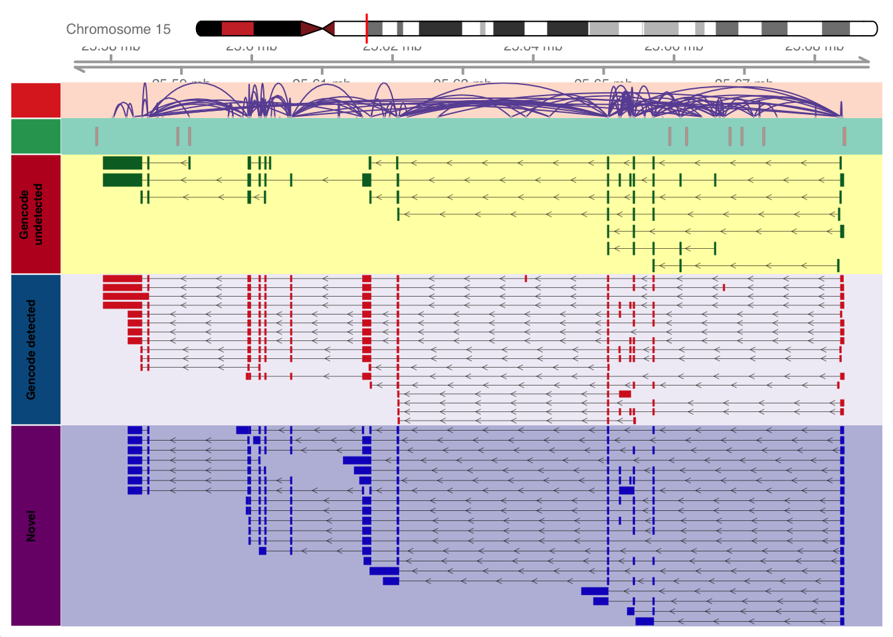
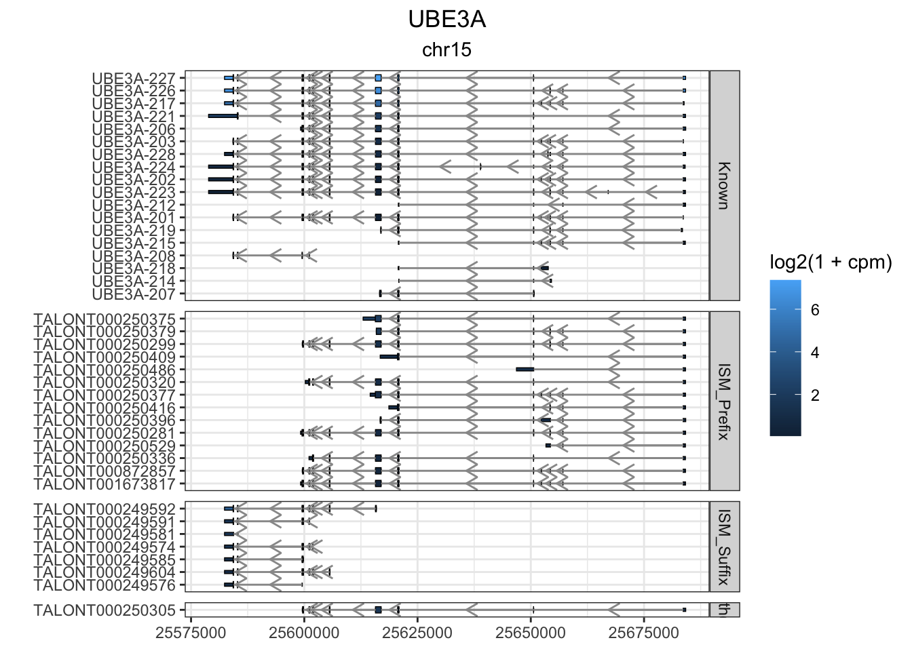

options(stringsAsFactors = F)
options(ucscChromosomeNames = F)
suppressMessages({
library(data.table)
library(tidyverse)
library(IsoformSwitchAnalyzeR)
library(rtracklayer)
library(ggrepel)
library(scales)
library(GenomicFeatures)
library(GenomicRanges)
library(GenomicInteractions)
library(Gviz)
})
colorVector = c(
"Known" = "#009E73",
"ISM" = "#0072B2",
"ISM_Prefix" = "#005996",
"ISM_Suffix" = "#378bcc",
"NIC" = "#D55E00",
"NNC" = "#E69F00",
"Other" = "#000000"
)
colorVector_ismSplit = colorVector[-2]Figure 2 - Plot One Gene
if(!file.exists('data/working/locusPlot_workingData.RData')) {
# CAGE tracks
cage=AnnotationTrack(range = "ref/CAGE/hg19.cage_peak_phase1and2combined_coord.bed",
background.panel = "#99d8c9",
fill="#fc9272",
name = "CAGE peaks",
col.line="#99d8c9",
background.title="#2ca25f",
fontcolor.title="black")
# Intropolis junctions
jc=read.delim("ref/intropolis/intropolis_v1_hg19_2samples_10counts_starSJout.tsv.gz",header = F)
jc= jc[jc$V7>100,]
anchor.one = GRanges(jc$V1, IRanges(jc$V2 + 1, width=5))
anchor.two = GRanges(jc$V1, IRanges(jc$V3, width=5))
interaction_counts = log2(jc$V7)
jc_object=GenomicInteractions(anchor.one,anchor.two,interaction_counts)
jc_track=InteractionTrack(jc_object,name = "Intropolis junctions")
displayPars(jc_track)=list(background.panel = "#fee0d2",
col.interactions ="#6a51a3", #"#43a2ca",
col.anchors.line = "gray",
col.anchors.line = "gray",
lwd=0.6,
fontcolor.title="black",
background.title="#de2d26",
plot.outside = FALSE)
# Gencode v33 Annotations
gencode="ref/gencode.v33lift37.annotation.gtf.gz"
gencode_txdb=makeTxDbFromGFF(gencode, format="gtf")
gencode_transcript=exonsBy(gencode_txdb,by="tx",use.names=T)
gr.gencode = rtracklayer::import(gencode) %>% as_tibble()
# Isoseq Annotations
isoseq="data/sqanti/cp_vz_0.75_min_7_recovery_talon_corrected.gtf.cds.gff.gz"
isoseq_txdb=makeTxDbFromGFF(isoseq, format="gtf")
isoseq_transcript=exonsBy(isoseq_txdb,by="tx",use.names=T)
gr.isoseq = rtracklayer::import(isoseq) %>% as_tibble()
cts = read_table("data/cp_vz_0.75_min_7_recovery_talon_abundance_filtered.tsv.gz")
cts$novelty2 = as.character(cts$transcript_novelty)
cts$novelty2[which(cts$novelty2=="ISM" & cts$ISM_subtype=="Prefix")] = "ISM_Prefix"
cts$novelty2[which(cts$novelty2=="ISM" & cts$ISM_subtype=="Suffix")] = "ISM_Suffix"
cts$novelty2[cts$novelty2 %in% c("Antisense", "Genomic", "Intergenic", "ISM")] = "Other"
cts$novelty2 = factor(cts$novelty2,levels=c("Known", "ISM_Prefix", "ISM_Suffix", "NIC", "NNC", "Other"))
cts$counts = rowSums(cts[,c(12:35)])
cts$cpm = cts$counts / (sum(cts$counts)/1000000)
gr.isoseq.old = gr.isoseq
gr.isoseq <- gr.isoseq.old %>% left_join(cts, by=c("transcript_id" = "annot_transcript_id"))
save.image('data/working/locusPlot_workingData.RData')
} else {
load('data/working/locusPlot_workingData.RData')
}Import genomic features from the file as a GRanges object ... OK
Prepare the 'metadata' data frame ... OK
Make the TxDb object ... Warning in .get_cds_IDX(mcols0$type, mcols0$phase): The "phase" metadata column contains non-NA values for features of type
stop_codon. This information was ignored.Warning in .reject_transcripts(bad_tx, because): The following transcripts were dropped because they have incompatible
CDS and stop codons: ENST00000422803.2_2, ENST00000618549.1_2,
ENST00000619291.4_2, ENST00000621077.1_2, ENST00000621229.1_2,
ENST00000631326.2_2OK
Import genomic features from the file as a GRanges object ... OK
Prepare the 'metadata' data frame ... OK
Make the TxDb object ... Warning in .get_cds_IDX(mcols0$type, mcols0$phase): some CDS phases are missing
or not between 0 and 2OK
── Column specification ────────────────────────────────────────────────────────
cols(
.default = col_double(),
annot_gene_id = col_character(),
annot_transcript_id = col_character(),
annot_gene_name = col_character(),
annot_transcript_name = col_character(),
gene_novelty = col_character(),
transcript_novelty = col_character(),
ISM_subtype = col_character()
)
ℹ Use `spec()` for the full column specifications.Plot One Gene
isoseq.gene.names = rtracklayer::import("data/cp_vz_0.75_min_7_recovery_talon.gtf.gz") %>%
as_tibble() %>%
dplyr::filter(type == "gene") %>%
dplyr::select(gene_id, gene_name)
gr.isoseq = gr.isoseq %>% left_join(isoseq.gene.names)Joining, by = "gene_id"annot.gene = as_tibble(gr.gencode) %>% filter(type=="gene")
current_gene="UBE3A"
genes_to_plot = data.frame(V1 = current_gene, V2 = unique(na.omit(gr.gencode$transcript_id[which(gr.gencode$gene_name==current_gene)])), V3="Gencode")
genes_to_plot = rbind(genes_to_plot, data.frame(V1 = current_gene, V2 = unique(na.omit(gr.isoseq$transcript_id[which(gr.isoseq$gene_name==current_gene)])), V3="Isoseq"))
genes_to_plot = genes_to_plot[!apply(is.na(genes_to_plot), 1,any),]
gencode_only=base::setdiff(with(genes_to_plot,V2[V1 == current_gene & V3=="Gencode"]) , with(genes_to_plot,V2[V1 == current_gene & V3=="Isoseq"]))
shared=base::intersect(with(genes_to_plot,V2[V1 == current_gene & V3=="Gencode"]) , with(genes_to_plot,V2[V1 == current_gene & V3=="Isoseq"]))
novel=base::setdiff(with(genes_to_plot,V2[V1 == current_gene & V3=="Isoseq"]) , with(genes_to_plot,V2[V1 == current_gene & V3=="Gencode"]))
novel=novel[grepl("^TALON",novel)]
# gencode tracks
gencode_only_transcript_onegene=gencode_transcript[gencode_only,]
gencode_only_transcript_onegene=unlist(gencode_only_transcript_onegene)
elementMetadata(gencode_only_transcript_onegene)$transcript <- names(gencode_only_transcript_onegene)
gencode_only_track=GeneRegionTrack(gencode_only_transcript_onegene,group = "transcript",name = "Gencode undetected")
shared_transcript=gencode_transcript[shared,]
shared_transcript=unlist(shared_transcript)
elementMetadata(shared_transcript)$transcript=names(shared_transcript)
shared_track=GeneRegionTrack(shared_transcript,group = "transcript",name = "Gencode detected")
displayPars(gencode_only_track)=list(stacking="squish",
background.panel = "#ffffb2",
fill="#006d2c",
col="#006d2c",
lwd=0.3,
col.line="black",
fontcolor.title="black",
background.title="#bd0026")
displayPars(shared_track)=list(stacking="squish",
background.panel = "#f1eef6",
fill="#d62424",
col="#d62424",
lwd=0.3,
col.line="black",
fontcolor.title="black",
background.title="#045a8d")
# isoseq tracks
isoseq_transcript_onegene=isoseq_transcript[novel,]
isoseq_transcript_onegene=unlist(isoseq_transcript_onegene)
elementMetadata(isoseq_transcript_onegene)$transcript=names(isoseq_transcript_onegene)
seqlevels(isoseq_transcript_onegene) = seqlevels(isoseq_transcript_onegene)[1:25]
isoseq_track=GeneRegionTrack(isoseq_transcript_onegene,group = "transcript",name = "Novel", u=FALSE)
displayPars(isoseq_track)=list(stacking="squish",
background.panel = "#bcbddc",
fill="#171cc7",
col="#171cc7",
lwd=0.3,
col.line="black",
showId = FALSE,
transcriptAnnotation = "transcript",
fontcolor.title="black",
background.title="#7a0177")
# universal tracks
axisTrack <- GenomeAxisTrack()
ideoTrack <- IdeogramTrack(genome = "hg19", chromosome = unique(seqnames(gencode_only_track)))
leftmost=min(c(gencode_only_transcript_onegene@ranges@start,shared_transcript@ranges@start,isoseq_transcript_onegene@ranges@start))
rightmost=max(c(gencode_only_transcript_onegene@ranges@start,shared_transcript@ranges@start,isoseq_transcript_onegene@ranges@start))
extra=(rightmost - leftmost)*0.05
plotTracks(list(ideoTrack,axisTrack,jc_track,cage,gencode_only_track,shared_track,isoseq_track),
chromosome = unique(seqnames(isoseq_track)),
from = leftmost - extra,
to = rightmost + extra,
sizes = c(1.5,1.5,1.5,1.5,5, max(1.5,0.35*length(shared)),max(2,0.3*length(novel))))
#devtools::install_github("dzhang32/ggtranscript")
library(ggtranscript)
this_gene="UBE3A"
these_exons <- gr.isoseq %>% dplyr::filter(annot_gene_name == this_gene & type == "exon" & (counts > 10 | novelty2=="Known"))
this_cds <- gr.isoseq %>% dplyr::filter(annot_gene_name == this_gene & type == "CDS" & (counts > 10 | novelty2=="Known"))
g1<-these_exons %>%
ggplot(aes(
xstart = start,
xend = end,
y = reorder(annot_transcript_name, counts)
)) +
geom_range(
aes(fill = log2(1+cpm), group=novelty2), height=.25) +
geom_range(data=this_cds, aes(fill = log2(1+cpm), group=novelty2)) +
geom_intron(
data = to_intron(these_exons, "annot_transcript_name"),
aes(strand = strand),arrow.min.intron.length = 500,
arrow = grid::arrow(ends = "last", length = grid::unit(0.1, "inches")),
color='grey60',
) + facet_grid(novelty2~.,scale='free',space='free') + theme_bw() + labs(y="") + ggtitle(this_gene,subtitle = unique(these_exons$seqnames)) + theme(plot.title = element_text(hjust=.5), plot.subtitle = element_text(hjust=.5))
g1 
ggsave(g1, file=paste0("output/figures/switch_plots/ggtranscript_", this_gene,".pdf"),height=10, width=12)
#
# these_exons <- gr.isoseq %>% dplyr::filter(annot_gene_name == this_gene & (type == "exon" | type=="CDS")& (counts > 100 | novelty2=="Known"))
#
# this_gene_rescaled <- shorten_gaps(
# these_exons,
# to_intron(these_exons %>% filter(type=="exon"), "annot_transcript_name"),
# group_var = "annot_transcript_name"
# )
#
# this_cds_rescaled <- shorten_gaps(
# this_cds,
# to_intron(this_cds, "annot_transcript_name"),
# group_var = "annot_transcript_name"
# )
#
# this_gene_rescaled %>%
# dplyr::filter(type == "exon") %>%
# ggplot(aes(
# xstart = start,
# xend = end,
# y = annot_transcript_name
# )) +
# geom_range(
# aes(fill = log(1+cpm)), height=.25) +
# geom_range(data=this_gene_rescaled %>% filter(type=="CDS"),aes(fill = log(1+cpm)))+
# geom_intron(
# data = this_gene_rescaled %>% dplyr::filter(type == "intron"),
# arrow.min.intron.length = 200, aes(strand=strand)
# )+ facet_grid(novelty2~.,scale='free',space='free') + theme_bw() + labs(y="")